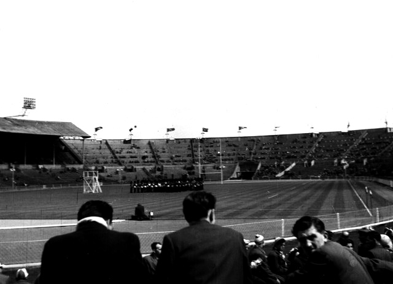
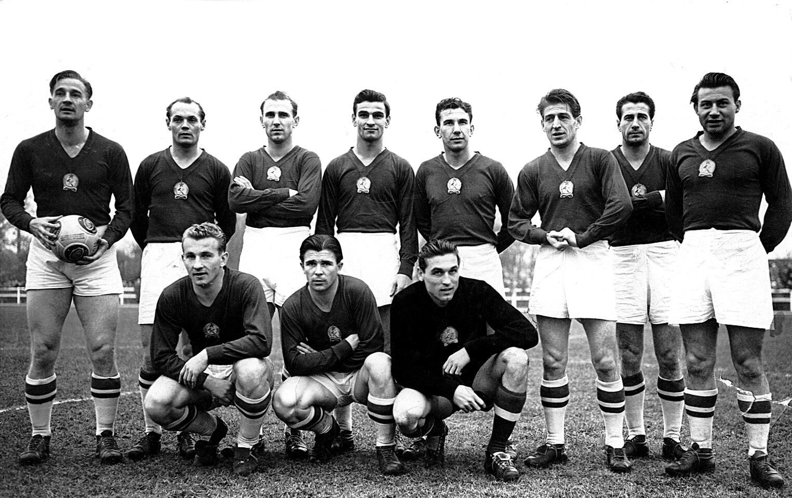
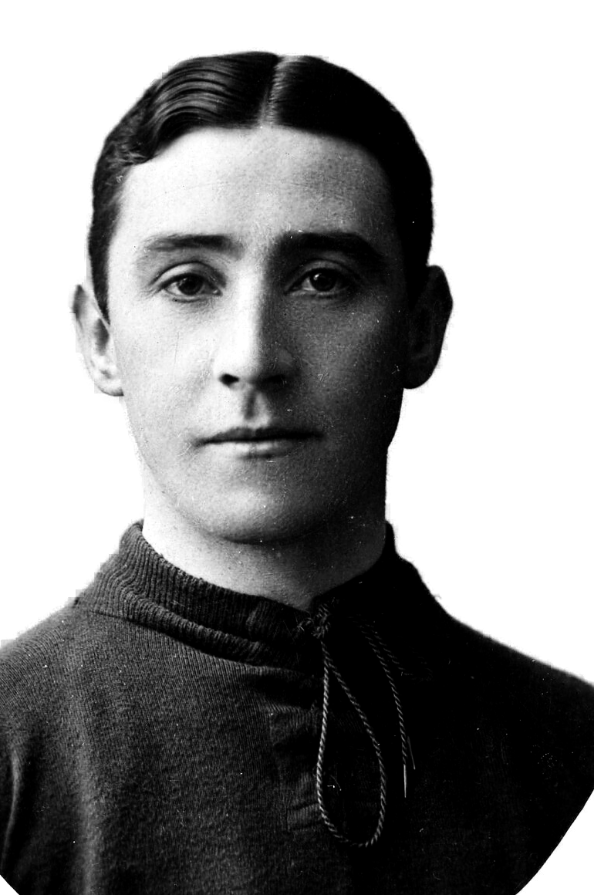
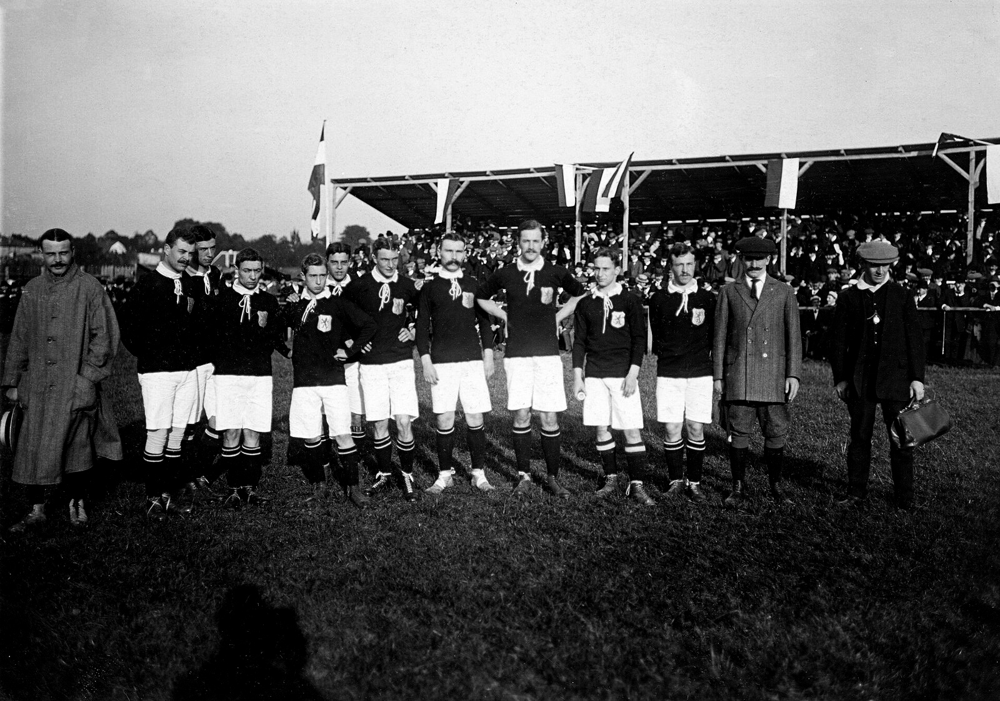

SELLO DE HUNGRÍA · 1953 · MAGYAR POSTA, DOMINIO PÚBLICO
MARCADORRECREACIÓN
3
INGLATERRA
–
6
HUNGRÍA

WEMBLEY · FOTO: DR NEIL CLIFTON, CC BY-SA 2.0

HUNGRÍA · 1953 · FOTO: TIBOR ERKY-NAGY / FORTEPAN, CC BY-SA 3.0
TARJETA DE PRENSA
G. SEBES · SELECCIONADOR
— G. SEBES

JIMMY HOGAN · 1908 · AUTOR DESCONOCIDO, DOMINIO PÚBLICO
INGLÉS
SOLO EL SÁBADO

PAÍSES BAJOS · 1910 · HOGAN, ENTRENADOR (A LA DCHA.) · SPAARNESTAD PHOTO, DOMINIO PÚBLICO
SOLO EL SÁBADO
FOTOS: AUTOR DESCONOCIDO (DOMINIO PÚBLICO; NATIONAL FOOTBALL MUSEUM Y SPAARNESTAD PHOTO), MAGYAR POSTA (DOMINIO PÚBLICO), TIBOR ERKY-NAGY / FORTEPAN (CC BY-SA 3.0), DR NEIL CLIFTON (CC BY-SA 2.0), VÍA WIKIMEDIA COMMONS · MARCADOR, ARMARIO, BALÓN Y CAMPO: RECREACIÓN